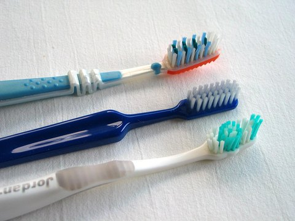

Optima Academy OnlineAn Education Experience Company
Optima Academy OnlineAn Education Experience CompanyFonética
Sounds you already make
Good news: today's sounds are ones your mouth already knows. The Spanish ch is the same ch as English "church." The tricky part is just remembering that Spanish v and b sound almost identical — both soft. Let's tune those, then use them on the record.
One easy sound: ch
Spanish ch is exactly the English ch in “cheese.” It shows up right in the middle of two of your most-used routine verbs. Click 🔊, then say each one back, landing cleanly on the ch.
 ducharsedu-CHAR-se — same ch as “church”
ducharsedu-CHAR-se — same ch as “church”
cepillarsenote the ll: ce-pi-LLAR-se (the ll sounds like the y in yes)
Bonus sound in cepillarse: the double ll sounds like a y in most of Latin America — ce-pi-YAR-se, not “ce-pil-lar-se.”
Spanish v and b are twins
Here's the one that trips up English speakers: in Spanish, v and b sound almost the same — both a soft b made with the lips barely touching. There's no English “vvv” buzz. Don't bite your lip for the v in levantarse or vestirse. Listen and echo:
 levantarsesoft v — like a gentle b
levantarsesoft v — like a gentle b vestirsesoft v at the start
vestirsesoft v at the start lavarsesoft v in the middle
lavarsesoft v in the middle
Try it: say me levanto without biting your lip — keep the v soft, like a lazy b. Then reveal a tip.
Which syllable do I punch?
Your reflexive present forms end in a vowel or -s, so the default rule you learned in Semester 1 applies: stress the second-to-last syllable. Listen for the punch:
- Me levanto a las seis.le-VÁN-to
- ¿A qué hora te levantas?le-VÁN-tas
- Ellos se acuestan tarde.a-CUÉS-tan
Say me despierto out loud — which syllable do you punch? Decide, then reveal.
Many Ecuadorians grow up with the pasillo playing in the background of daily life — a slow, heartfelt guitar-and-voice style considered Ecuador's national music. The singer Julio Jaramillo, born in Guayaquil, made it famous across all of Latin America. A soundtrack, like a routine, is something you live inside without always noticing it.
Here's a famous mix-up: the classic “Panama hat” is actually woven in Ecuador, mostly around the towns of Montecristi and Cuenca, from fine toquilla straw. It got its English name only because travelers bought the hats while passing through Panama. Putting one on — ponerse el sombrero — is a small daily act tied to a craft that UNESCO now protects as cultural heritage.
Your graded recording (15 points)
Record yourself narrating your morning routine in order — at least four steps, each a reflexive verb, connected with sequence words (primero, después, luego, y por último). Aim for 30–45 seconds. Use the yo form throughout (me…).
«Buenos días. Primero me despierto a las seis con el despertador. Después me levanto y me ducho. Luego me visto y me cepillo los dientes. Y por último, desayuno y voy a la escuela.»
(Four reflexive steps, in order, glued together with sequence words.)
Need help hearing the target one more time before you record? Replay these models:
- Mi rutina…«Primero me despierto, después me ducho y me visto.»
- Me lavo…«Me lavo la cara y me cepillo los dientes.»
How it's scored — the rubric
Three criteria, 5 points each, 15 total. Read it before you record so you know what earns full marks.
| Criterion | What earns 5 / 5 | Pts |
|---|---|---|
| Task Completion | At least four routine steps, each a reflexive verb, ordered with sequence words — and true (or plausible) about a real day. | 5 |
| Language Accuracy | Correct pronoun with each verb (me…), correct forms including any vowel jump (me despierto, me acuesto). | 5 |
| Pronunciation & Fluency | Clean ch and soft v/b; stress in the right place; steady pace, understandable throughout. | 5 |
- Did I include at least four steps, each a reflexive verb?
- Did I use sequence words (primero, después, luego, por último)?
- Is the pronoun me in front of every verb (I'm talking about myself)?
- Did I get the vowel jumps right (me despierto, not “me desperto”)?
- Did I keep the v/b soft and the ch clean?
- Did I play my recording back once and re-record if needed before submitting?
Repaso — write it, then conjugate it
The Grammar Quiz is in Lesson 4.08; you should complete it by the end of the module. Today you review by writing, not by recognizing — nothing is shown to you here, you produce it. None of this is graded.
Write each word in Spanish, with its article where it has one — the same way it appears on your flip cards.
Accents are part of the word: después is not despues. Click a letter above to add it where your cursor is.
Fill in every form. Complete the whole table before you check — the point is to see the full set at once.
| Subject | levantarse |
|---|---|
| yo | |
| tú | |
| usted / él / ella | |
| nosotros/as | |
| ustedes / ellos / ellas |
A reflexive verb — the pronoun changes with the subject and sits before the verb.
You just narrated a whole morning on the record — clean ch, soft v, and the stress in the right place. That's a bigger step than it feels like. ¡Buen trabajo, y hasta mañana! (Good work, and see you tomorrow!)